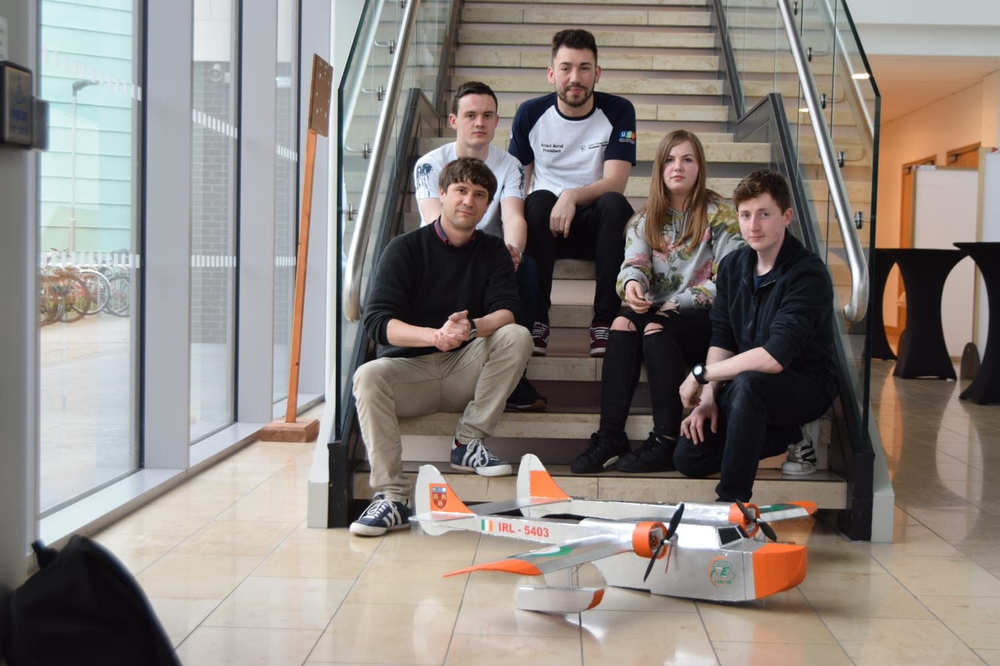
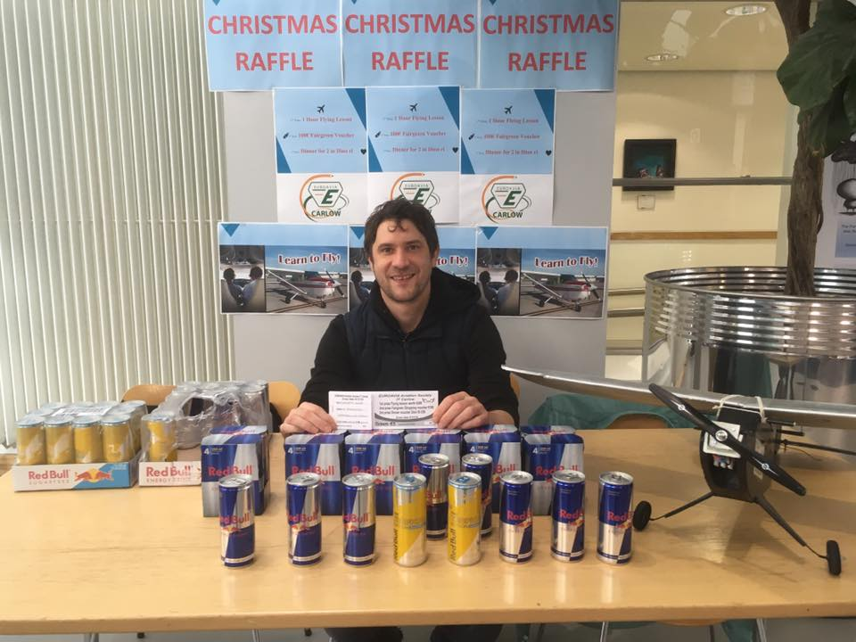
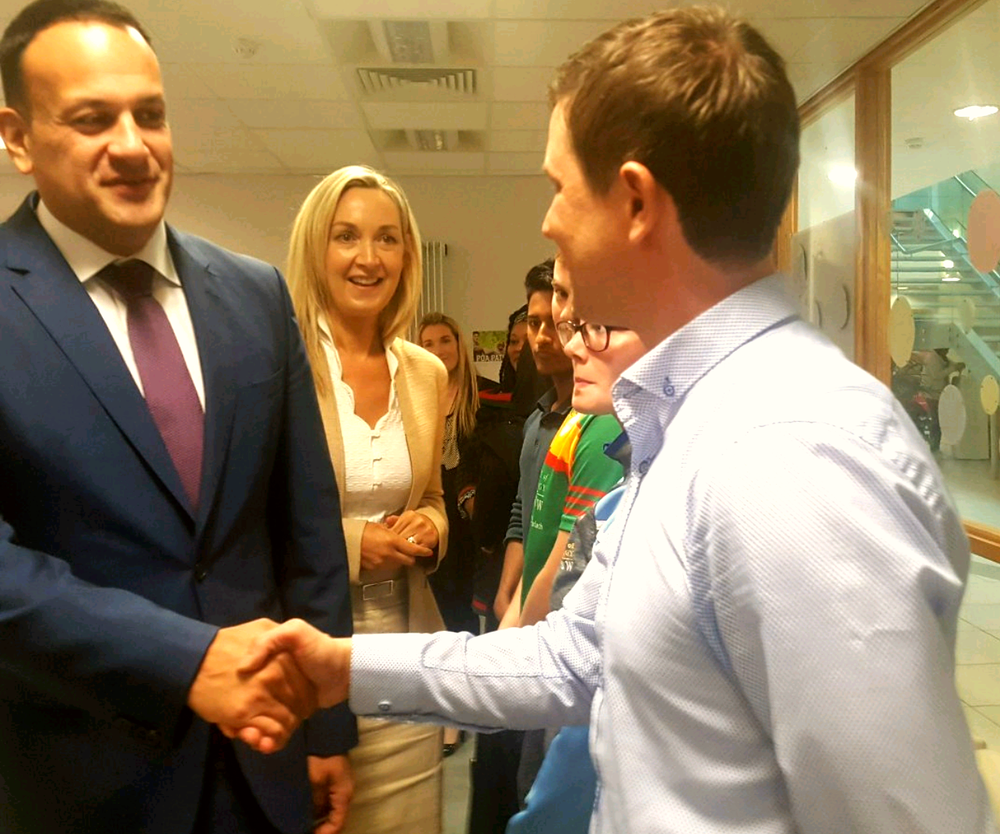

Extracurricular Activities
EUROAVIA is an international student aerospace society that encompasses over forty universities and third level education facilities across Europe. The society was founded by Jean Roeder in 1959 to provide a platform for communication between European aeronautical engineering students and the aerospace industry. EUROAVIA receives funding from Airbus and the European Commission and is governed by Dutch law. The society has two thousand members. The International board represents all the regional societies, provides guidance and limited financing to the associated societies. The individual societies have their own boards and decide in which direction their own societies take. I have been the president for EUROAVIA Carlow for the last two years and an executive board member before that. My duties are to foster growth, promote activity, interaction and engagement between my fellow board members and the regular members. Other responsibilities are compiling reports, organising/attending meetings and liaise with faculty and the international board.

EUROAVIA holds many competitions and international events. Some of these include, The Air Cargo Challenge, SpaceUp conference, Rocket Workshops, soft skills workshops, cultural awareness, and Flyins. A Flyin is an event where the local society undertakes to host fellow European EUROAVIA students in their university town. We at EUROAVIA Carlow organised such an event two years ago. The event held a series of talks from the leasing sector, an air crash investigator and more. Excursions included a visit to Baldonnel aerodrome, Limetree airfield and Kilkenny on St. Patrick’s day.
We also plan and fund our own competitions at the local level. This year we decided to hold a remote control glider competition. The challenge is to design, build and fly a remote control glider, with the prize given to the longest glider aloft. The remote control gliders are airlifted to height by the FT Seaduck and released remotely. Please watch the maiden test flight of the FT Seaduck in the video below:


We are mostly self funded and have to raise money to finance our projects. This year we generated over four hundred euro and received additional monies from IT Carlow and Engineers Ireland. EUROAVIA Carlow received some exposure this year by appearing on the RTE news as part of their coverage of science week at IT Carlow. I also had the privilege of meeting Taoiseach Leo Varadkar representing EUROAVIA Carlow.
Please watch the video below:
For those of you who missed it we managed to represent the IT and the society today on the RTE news and even managed to sneak in our Plane for a feature.A great way to promote our RC challenge, if you're not involved come and be a part of it ! #EUROAVIA
Geplaatst door Euroavia Carlow op Maandag 12 november 2018

Alongside my work with EUROAVIA I have volunteered with IASA and attended many of their symposiums and events. I really appreciate this association as it offers great insight and opportunities to learn more about the Irish aviation industry and to network. I also try to attend as many company open evenings and seminars as I can.
I also helped out in many college open days. Primarily acting as a host and providing information about the college and my course.
I have been the class representative to the student union throughout my time at IT Carlow. This mostly involves being a link between students and staff and attending monthly meetings.